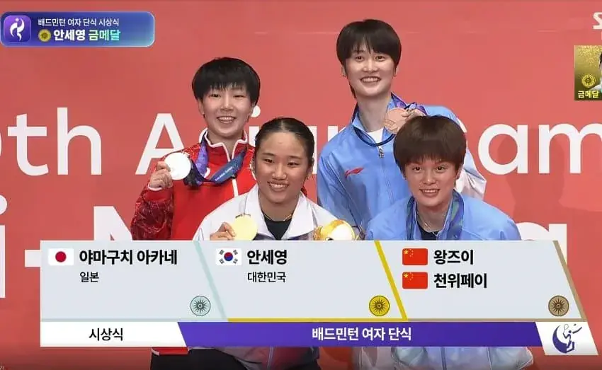

안세영 피해자모임 ㄷㄷ
댓글
안세영 밤세영? 아니 안세영
단식인데 왜 동메달은 2명인지 알려줄 배잘알 구함
토너먼트인데 34위전 안해서 걍 주나보지
준결승에서 패하면 3,4위전 없이 동메달이래
안세영 일찍 만난죄와 비겁하게 피해가려고 탈락한 죄로 동메달형에 처해짐
별 이유는 없고 이번 아시안게임에서는 경기 운영을 그렇게하기로 정해서 그럼.
종목들 중에 체력 소모가 많은 종목, 혹은 투기 종목들의 경우 선수 보호와 부상 위함 방지를 위해 굳이 동메달 결정전을 하지 않음. 특히 투기종목의 경우 패배 후 짧은 시각 내에 피로 및 타박상애서 회복해서 한경기 더 하는게 가혹하고 부상 위험이 매우 높아짐.
그리고 격투 종목이나 일대일 맞대결 경기의 경우 결승 진출에 실패한 선수들은 정신적으로 큰 좌절감을 느낀 상태인데 동기 부여가 떨어진 상태로 경기에 임하면 집중력이 떨어져 대형 부상으로 이어질 위험이 더욱 커지는 경우도 있다고 함.
대회 특성에 따라 일정이 촉박하거나 참가자가 많은 경우에도 3,4위전을 안하는 경우도 있음. 특히 성별로 단복식이나 체급별 경기가 많은 경기들, 그리고 경기시간이 정해지지 않고 스코어로 승패가 갈려서 굥기 종료 시간이 예측되지 않는 경기들의 경우 대회 효율적 진행을 위해 동메달결정전을 생략함.
물론 이게 절대적인 기준은 아니고 여러 상황을 종합적으로 고려해서 결정함. 아러란 특성이 있어도 3,4위전을 하는 경우도 있고 반대 경우도 있음. 또한 일부 투기 종목의 경우 아래 토너먼트에서 패했어도 한번의 기회를 더 줘서 패자결승 - 동메달 결정전을 하는 경우도 있음.
미운놈들 떡하나 더준듯
사진 왤케 드록바처럼 나왔냐ㅋ
마주치면 형님이라 부를 자신 있음
잉? 중국 입고뛰는 유니폼은 요넥스던데 바막은 리닝이네?
안세영도 '이렇게 지지가 나오네요' 하냐
근데 매번 쟤네 4명이 금은동 다 해먹네 ㅋㅋ
존나쎄영
한중일 다해먹었네
배드민턴은 인구수도 엄청 많은데 대단한거임
차원이 달라
야마구치 1라운드 올인 한거 같은데 짤막
2라운드 체력 거덜나서 망함
진짜 장기전 가면 ㅈ 같으니까 1라운드에 이 악물고 펀치 ㅈㄴ 날렸던 것 같은데 다 막더라..
2라에서는 체력 떨어져서 그런가 스스로 무너진 느낌
너희들은 안쎄영 나는 존나쎄영
라이브로 봤는데 진짜 잘하긴 하더라. 체력이나 연계도 좋은데 컨트롤까지 좋음. ㅋㅋㅋㅋㅋ
안세영 경기 보면 항상 죽음의 이지선다 계속 나옴. ㅋㅋㅋㅋㅋ 진짜 상대 입장에선 지옥 그 자체.
잠깐 뉴스에서 영상 나오길래 봤는데 안세영은 존나 설렁설렁 쳐내고 저 일본애는 ㄹㅇ 온몸비틀기로 쳐내고 쳐내다 따이더라 ㅋㅋㅋㅋㅋ
이름값 못하는선수 no.1 ㅈㄴ세영
진짜개잘하더라
성만 개씨였어도 이름값 했는데,,,
안세영 먼저 만나는 사람이 동메달 따게 되네..
혼자 클라스가 다르더라
대한민국이 대단한게 아니다
김연아가 대단한거다 라는 말이 있었는데
안세영이 바톤터치
언제까지 금메달 딸지 진짜 기대된다
가해자가 얼마나 무서우면 피해자들이 억지로 웃고있는 걸까요? ㅠㅠ
안세영이 괴롭혔세영 ㅠㅠ
안세영이랑 동시대에서 경쟁하는 선수들은 진짜 불쌍하긴 하네.. 쟤들도 진짜 한따까리 하는 선수들일텐데 ㅋㅋ
안세영 (존나셈)
중국선수 규현 닮았네 ㅋㅋㅋㅋㅋㅋㅋㅋㅋㅋ
사실상 안세영 늦게 만나는 순서대로 메달 받는거잖아 ㅋㅋ
전적 56승 1패..ㄷㄷ
개세영 진짜 존나 개세영
안세영이랑 배드민턴 고딩선수랑 붙으면 누가이길지궁금하네
2세트 막판 가면 상대가 불쌍해보일 정도
도가니 사리기를 안해서 말년에 고생좀 하지않을까 걱정됨
한중일이 여기서도 모이네
안세영은 남자 국대랑 붙으면 어떨까?
안세영 개쎄영